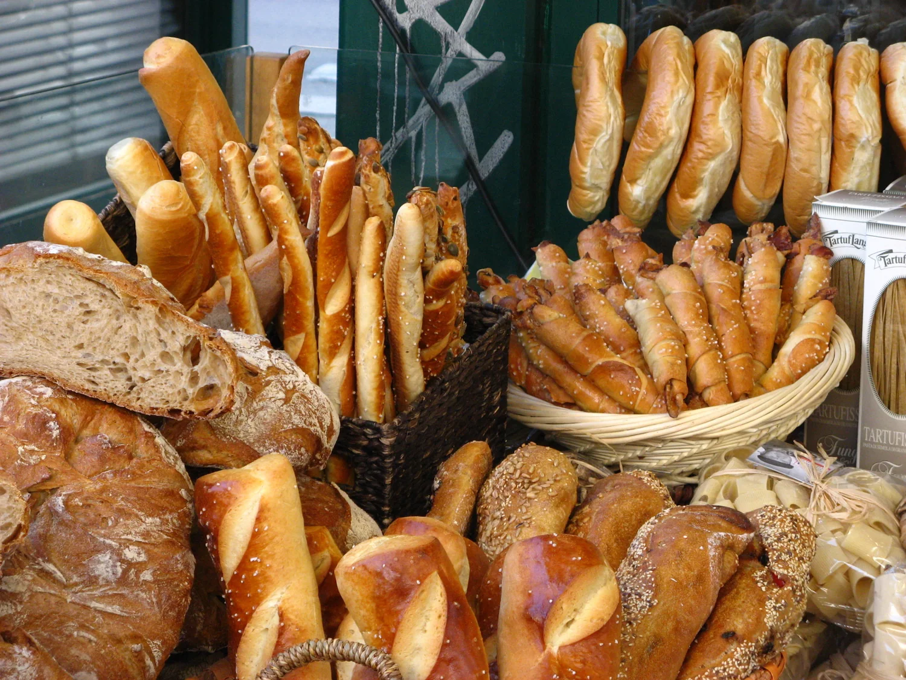

MERCADINHO DO BAIRRO
O bairro entrega.
Você escolhe.
Padaria, hortifruti e mercearia num só lugar. Peça pelo WhatsApp e receba como se tivesse ido ali na esquina.

TOP 10 MAIS PEDIDOS
O que sai mais
da prateleira
Ranking fictício do mês, usado para mostrar o que o comércio precisa repor.
Posições, quantidades e vendas são exemplos de demonstração.
Fotos de banco de imagens usadas apenas como referência visual de cada item fictício. Nenhuma delas representa o produto vendido pelo comércio.
AS PRATELEIRAS
Entre por categoria
OFERTAS DO DIA
Preço de vitrine
Promoções fictícias para mostrar a vitrine de ofertas.
Sem cobrança, sem pedido reservado e sem estoque real.
CASA DA ESQUINA
Queridinhos da casa
SEM COMPLICAÇÃO
Três passos e pronto.
HISTÓRIAS DE DEMONSTRAÇÃO
Gente do bairro
Você tem um comércio?
Leve seu estoque para a rua.
Esta demonstração mostra como fica uma loja online de bairro: catálogo, top 10, carrinho e painel para você manter os preços em dia.